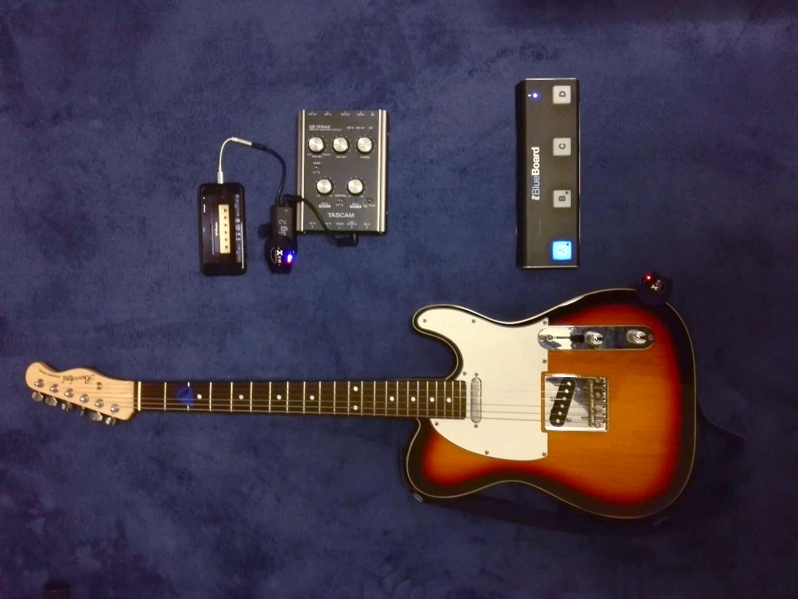
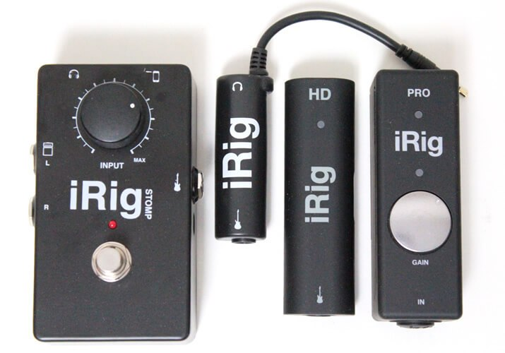
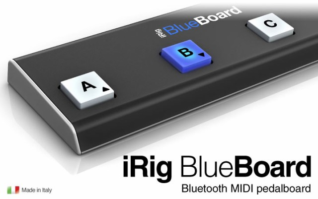
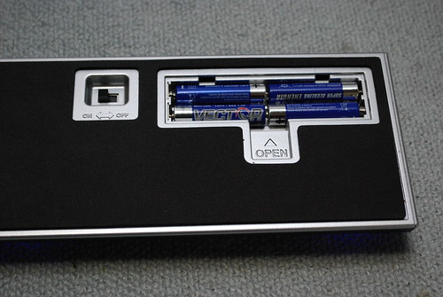
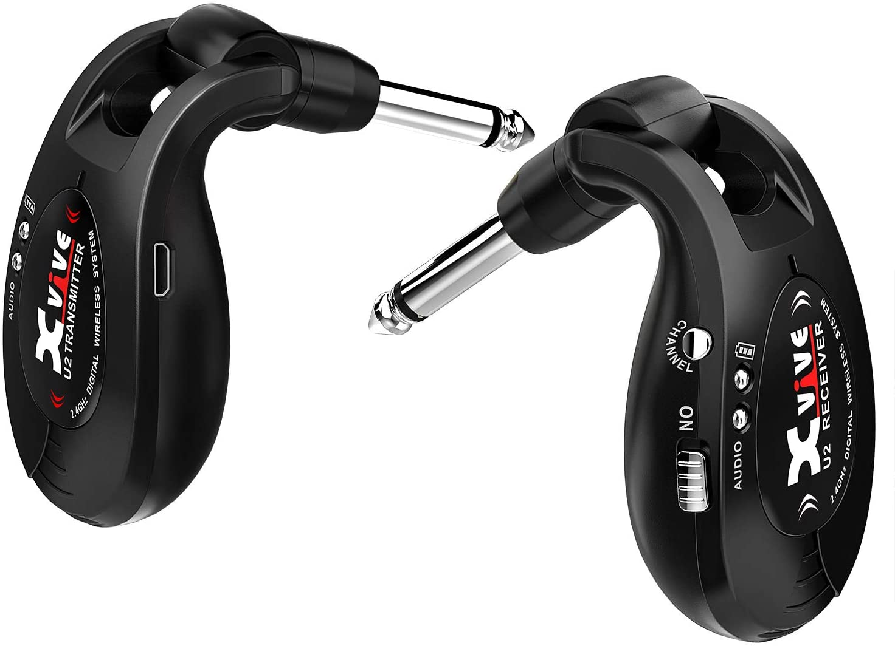
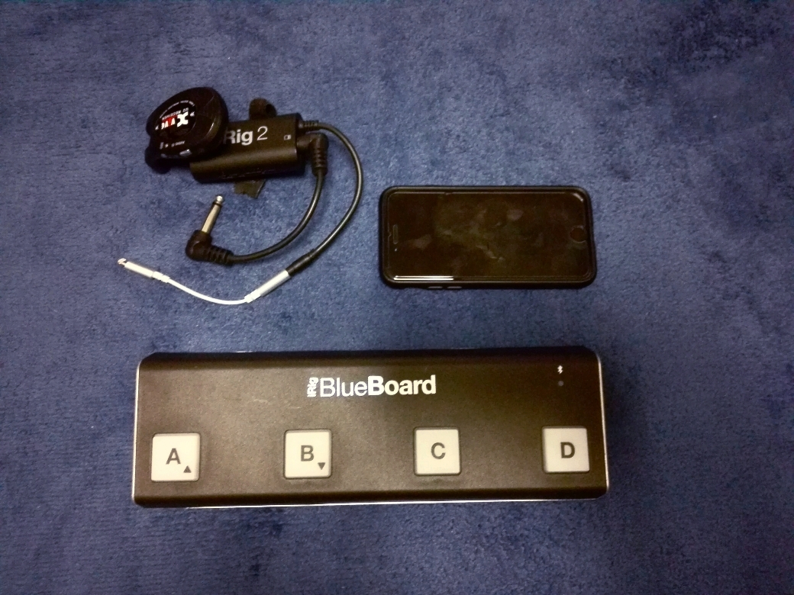

iPhoneを使用し（ほぼ）完全ワイヤレスなギター環境を手に入れる
Table of Contents

iPhone + iRig + iRig Blueboard + ワイヤレストランスミッタで（ほぼ）完全ワイヤレスなギター演奏環境を構築する方法について説明します。
iPhoneには任意のアンプシミュレータをインストールしておき、それをiRig BlueboardからコントロールすることでコンポーネントのON/OFFやバンクの切り替えを行います。iRigはiPhoneとギターおよびアンプの接続に使用します。
1 必要なハードウェア
ハードウェアとしては以下の4つが必要になります。
1.1 iPhone
お好きな機種をご使用ください。よほど古くない限り動作するかと思います。
既に何かしらの機種を持っている前提で話します。
1.2 iRig

iPhone向けのオーディオインターフェースであり、3種類のラインナップが存在します。
価格・本体サイズ・機能が絶妙なトレードオフを醸し出しているので、希望の条件に合ったものを選択しましょう。私は無印iRig 2を採用しました。
1.3 iRig Blueboard

これは平たく言うとBluetooth越しにiPhoneと接続するフットスイッチです。4つのコントロールスイッチにより、アンプシミュレータ上のエフェクターを操作します。
単4電池4本で駆動します。

USB充電でない点に若干の取り回しづらさを感じますが、電池はそう滅多に切れないので余り気にしなくていいと思います。
iPhoneにインストールしたアンプシュミレータはタッチ操作も可能なので、もし本番使用中にBlueboardの電池が切れた場合は気合でどうにかしましょう。
1.4 ワイヤレストランスミッタ

邪魔なシールドの代わりに無線で楽器および音響機器を接続するための機器です。私はXVIVE エックスバイブ ワイヤレス・ギターシステムを所持していますが、最近ではammoon ギターワイヤレスシステムのようにより安価でダサスタイリッシュな製品も出ているようです。
1.5 その他（必要な場合のみ）
1.5.1 ステレオミニプラグ-Lightning変換端子
iRig 2無印はiPhoneのイヤホンジャックに接続するようになっていますが、最近のiPhoneにはそもそもそれが付属していないので、わざわざ変換端子を購入しLightningケーブルとして差し込む必要があります。
非正規品でだいたい1500円くらいです。
1.5.2 パッチケーブル
iRig-ギター間はワイヤレストランスミッタで接続しますが、iRig-アンプ間は別途接続手段が必要になります。
演奏中、iRig自体は手元にある必要が無いので、アンプの上に置いておきパッチケーブル等で接続するとコンパクトになり良いと思います。
2 必要なアプリ
Blueboard接続用のアプリ（無料）とアンプシミュレータ（無料/有料）をインストールします。
2.1 iRig Blueboard
App Storeで「Blueboard」と検索したらすぐ出てくる、評価がやたら低い青いアイコンのアプリです。
Blueboardは通常のBluetooth機器のように設定画面から接続しても上手く機能しないため、毎回使い始めにこのアプリを立ち上げて接続を行います。
2.2 Bias FX（アンプシミュレータ）
これは好みによって選択が変わると思いますが、ここではBias FXを紹介しておきます。
これをオススメする理由は以下の通りです。
- Blueboardから問題なく操作できる
- アンプ・エフェクターの種類が豊富
- やろうと思えばBias Ampと連携させアンプ側を死ぬほど作り込める
- 音抜けが良い（らしい）
- スタンダードパッケージに含まれるエフェクト類が豊富で安価
3 実運用例
前述の機器やアプリのセットアップ方法は沢山の記事があるのでここでは割愛し、実際に使用するとどんな感じの運用になるのかについて軽く触れます。
まず、ギター以外に持ち込むものは全て揃えてこれだけになります。

コンパクト！
片付けもケーブルを抜いてさっとしまうだけなのでスピーディです。
フルに接続すると以下のような感じになります。
手元にアンプが無いので、代わりにオーディオインターフェースに接続しています。
ギターを担ぎ、Blueboardを足元に置き、その他のこまごまとしたものはアンプの上に置いておくとスッキリとすることでしょう。
あとはいつも通りの感覚でエフェクターを操作しながら、ケーブルの無いステージ上をいっぱいに使って演奏するだけです！
4 まとめ
以下のものを揃えましょう。
- iPhone
- iRig
- iRig Blueboard
- iRig Blueboard（アプリ）
- Bias FX